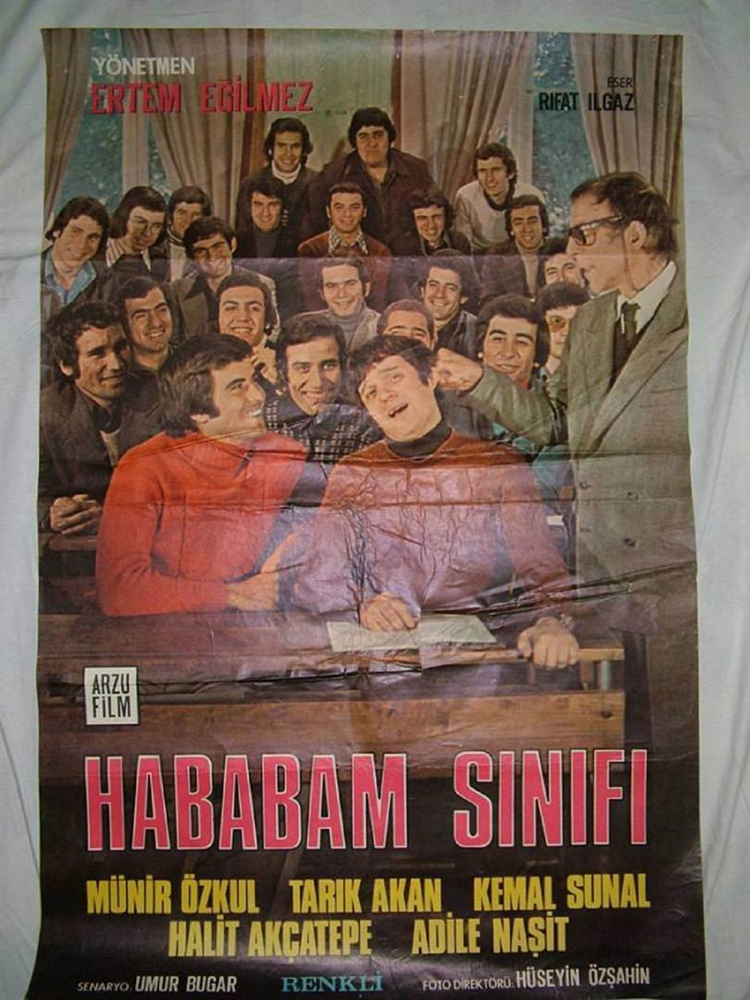
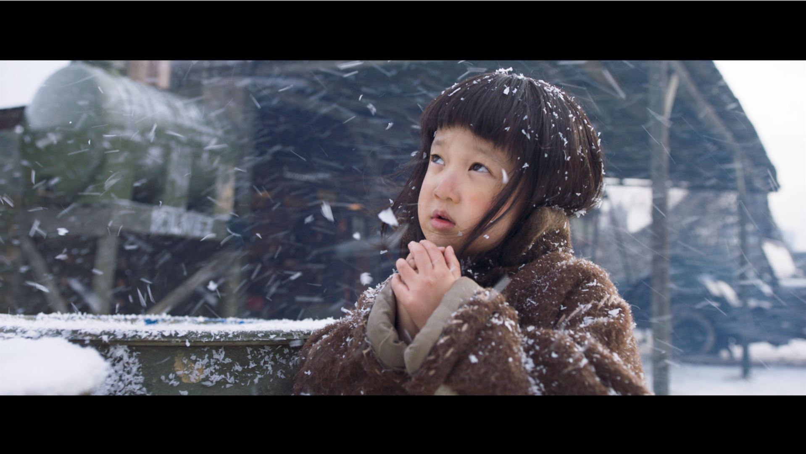
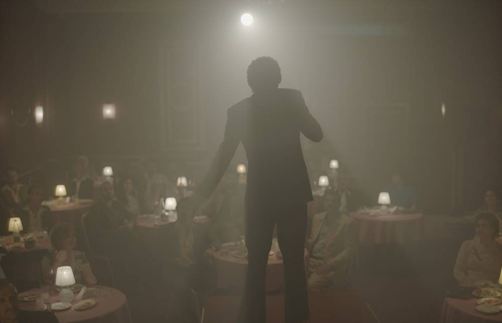
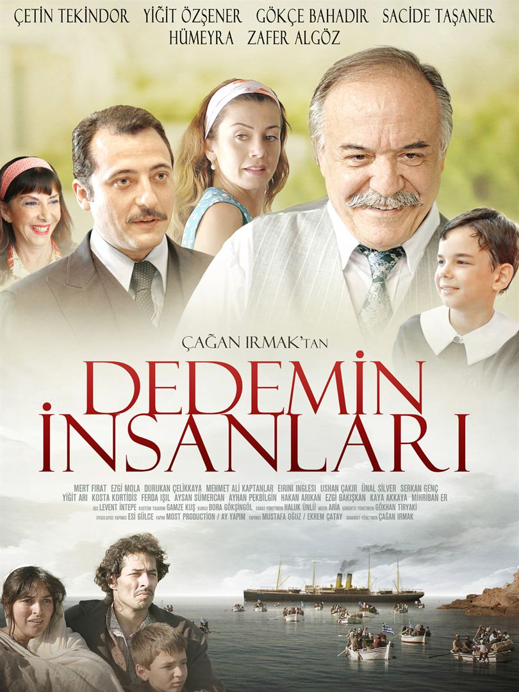
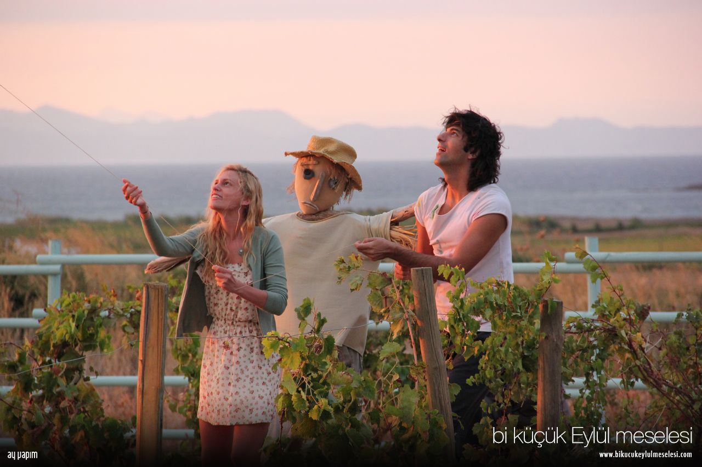
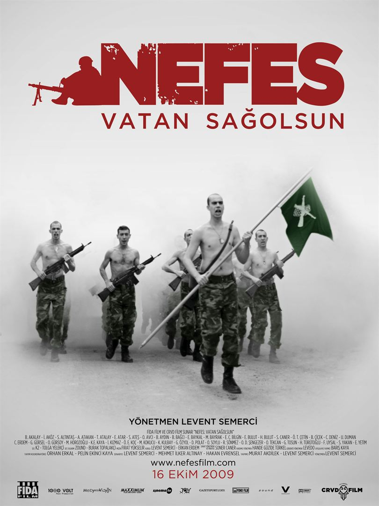

Film Kutusu
En Güncel Film İncelemeleri
Türk Filmleri
- Hababam Sınıfı 
- Ayla 
- Babam ve Oğlum
- Müslüm 
- Dedemin İnsanları 
- Bir Küçük Eylül Meselesi 
- Nefes: Vatan Sağolsun 
Öğrencilik hayatları haylazlık ve tembellik üzerine kurulu olan bir sınıf dolusu matrak öğrencinin, Özel Çamlıca Lisesi’nde yaşadığı yer yer eğlenceli, yer yer de dokunaklı öyküleri anlatan film, Hababam Sınıfı serisinin ilk filmidir. Keskin zekaları sayesinde tüm öğretmenlerini avuçlarında oynatıp okul düzeni ve eğitim sistemini alaşağı eden bu birbirinden renkli karakterdeki öğrenciler hem okulun hem de sinemamızın en yaramaz sınıfı olma özelliğinde. Ancak bu hükümdarlık okula atanan yeni müdür muavinin gelişiyle sarsıldığında, Hababam Sınıfı daha önce hiç karşılaşmadığı türden bir disiplin anlayışına ve zekaya sahip olan Mahmut Hoca tarafından unutulmaz derslere tabi tutulur. Hababam Sınıfı serisinin ilk filmi olan bu yapıt Rıfat Ilgaz'ın ölümsüz eseri Hababam Sınıfı romanından uyarlanmıştı.
Film, Kore Savaşı'nda yaşanan gerçek ve çok dramatik bir hikayeyi beyazperdeye taşıyacak. 1950 yılında savaşta yer alan Süleyman Astsubay savaş meydanında küçük bir kız bulur. 5 yaşındaki bu Koreli kız yetimdir ve nereye gideceğini bilmemektedir. Astsubay kızı yanına alır ve Ayla ismini verir.

Babam ve Oğlum'da, 12 Eylül darbesinin yıktığı hayatlardan birinde yetişmektedir küçük Deniz. Annesini henüz doğmadan önce kaybetmiş, bir gazetede yazar olarak çalışan babası tarafından mütevazi bir evde yetiştirilmiştir. Babası dışında tanıdığı tek bir akrabası bile yoktur. Taki babası Sadık, bir gün Deniz'i şaşırtacak bir haberle gelene kadar... Deniz artık babasıyla birlikte, hiç görmediği dedesinin yanında, küçük bir kasabada yaşayacaktır. Köye vardıklarında Sadık yıllar önce küstüğü babasını ilk kez görüyordur. Aralarındaki bu üskünlük kolay kolay geçecek cinsten bir durum değildir. Sadık'ın dönüş sebebini anlamlandıramayan aile bir yandan çok mutluyken diğer yandan tedirgindir de. Zamanla Deniz bu hiç görmediği ailesine alışırken ve her şey düzelmeye başlamışken yaşanan bir dram herkesi derinden etkileyecektir. Son dönem sinemamızın en dokunaklı filmlerinden biri olarak kabul gören Babam ve Oğlum kendi türünde klasikleşmeye aday filmlerden biri.
Müslüm, arabesk müziğinin efsane ismi Müslüm Gürses'in hayat hikayesini beyaz perdeye taşıyor. Unutulmaz ses sanatçısının iniş ve çıkışlarla dolu yaşamının anlatıldığı filmde, Müslüm Gürses’in milyonları etkileyen müziğine, çocukluğundan ölümüne kadar geçen zamanda yaşamına etki eden kişilere, çok sevdiğini her fırsatta dile getirdiği eşi Muhterem Nur’a odaklanılıyor. Timuçin Esen’in Müslüm Gürses’i canlandırdığı filmde, Muhterem Nur'a Zerrin Tekindor, Müslüm Gürses'in babasına ise Turgut Tunçalp hayat veriyor. Yönetmenliğini, Türkiye'nin geçen yılki Oscar yarışı için aday adayı olarak gönderdiği Ayla'nın yönetmeni Can Ulkay ve "Romantik Komedi" filminden 8 yıl sonra tekrar yönetmen koltuğuna oturan Ketche’nin (Hakan Kırvavaç) üstlendiği filmin senaryosunu Hakan Günday ve Gürhan Özçiftçi kaleme alıyor.
Ozan, Ege'nin sevimli ve küçük bir sahil kentinde geniş ailesiyle yaşayan 10 yaşında bir çocuktur. Ailesinin kökenleri şimdi Yunanistan'a bağlı olan Girit adasına dayanmaktadır ve dedesi Mehmet Bey zamanında mübadele ile Türkiye'ye göçmek durumunda kalan Giritli bir göçmendir. Bu yüzden mahallede Ozan'a arkadaşları "gavur" diye seslenmektedir. Dışlanmaktan korkan Ozan ise gavurluğu reddederek "Biz Türküz!" diye ailesine ve dedesine kafa tutar.
Her şeyin yolunda gittiği bir hayata sahip olan Eylül, talihsiz bir olay sonrasında yaşamının son bir ayını unutur. Çevresindeki herkes, tüm arkadaşları ve ailesi ona hiçbir sorun olmadığını söylemesine rağmen Eylül bir şeylerin yolunda gitmediğinden şüphelenir. Tamamen bilinçsizce, sadece içgüdülerini dinleyerek Bozcaada'ya gider ve orada tesadüf eseri hiç tanımadığı tuhaf bir adamla karşılaşır. Bu gizemli yabancı ise kendinden emin bir şekilde Eylül'e kendisini hatırlaması gerektiğini, aşık olduğu adam olduğunu söyler. Yapımcılığını Ay Yapım'ın üstlendiği aşk filminin başrollerini Farah Zeynep Abdullah ve Engin Akyürek paylaşırken, yönetmen ve senarist ise Kerem Deren.
ABD ve Avrupa'da çok yoğun kullanılsa da ülkemizde "savaş" konseptli filmler yok denecek kadar az çekilmiştir. Memleketin özel durumu bir yana, işte Nefes filmi de, konuyu ele alış biçimi açısından bir ilk sayılabilir. Bu film, güneydoğu'da Irak sınırına yakın bir ilçedeki komando tugayında bulunan ve 2365 metre yükseklikteki Karabal Tepesi'ndeki röle istasyonunu korumakla görevlendirilen bir yüzbaşı komutasındaki 40 askerin hikâyesi aktarmaktadır. Buz gibi sulardan geçtiler, tepelere tırmanıp, yamaçlardan indiler. Güneşte kavruldular, iki gün iki gece. Ellerinde tüfekleri. Sırtlarında evleri. Yüreklerinde sevdikleriyle. Sınır nedir, neresidir bilmezdi çoğu. Emir almadıkları, emir de vermedikleri bir hayattan, her şeyi emirle yaptıkları bir hayata geçtiklerinde sınırları da gördüler. Mevzilerde beklediler. Korudukları telsizden analarıyla, babalarıyla, sevgilileriyle görüşebilmek için telefon sırası beklediler. Kendilerini neyin beklediğini bilmeden günlerce, aylarca beklediler Karabal Tepe'de. Hakan Evrensel’in Güneydoğu’dan Öyküler adlı kitabının uyarlaması olan film için Tahtalı Dağı’nda bir karakol kurulmuş ve oyuncuları Türkiye’nin farklı konservatuarlarında okuyan öğrencilerden seçilmiştir.